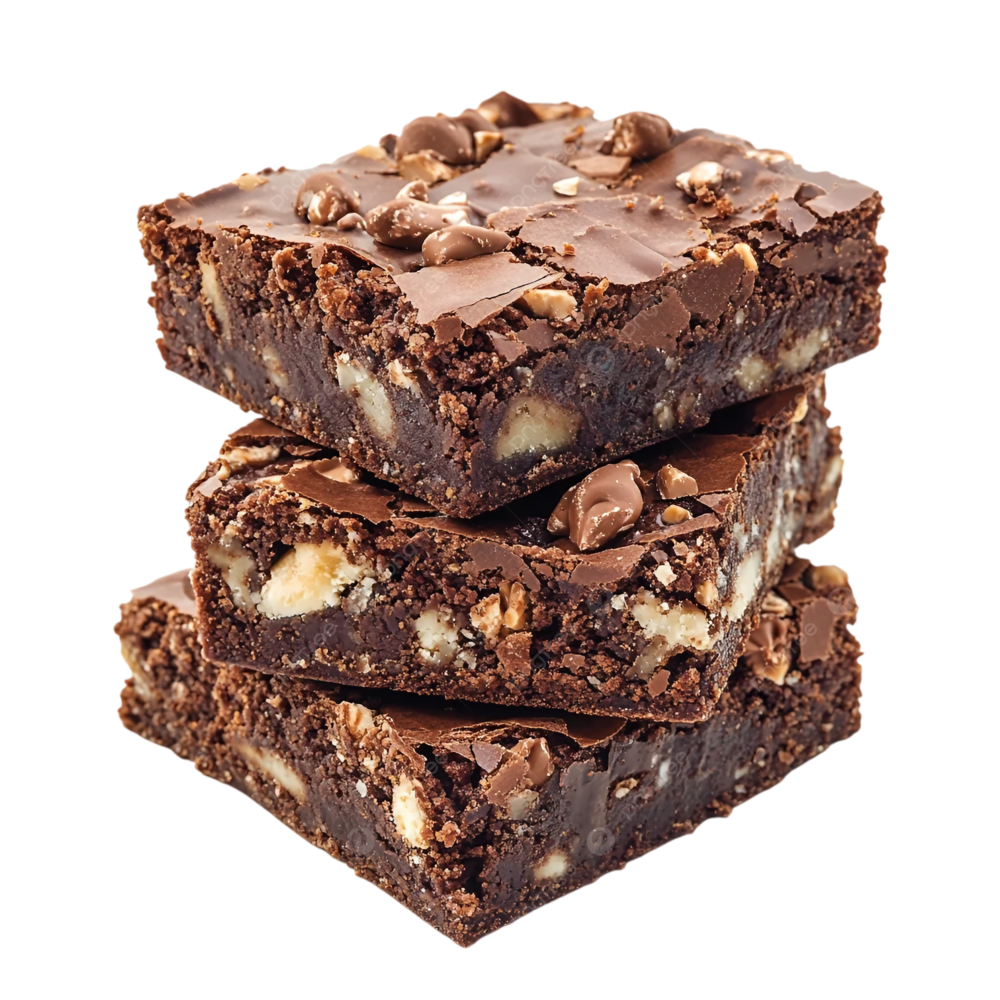

Recetas Fáciles y Deliciosas!
Entrada
Spring Rolls
Ingredientes
- 8 a 10 láminas de papel de arroz
- 100 g de fideos de arroz finos
- 1 zanahoria rallada
- ½ pepino en tiras finas
- ½ morrón rojo en tiras
- Hojas de lechuga
- Hojas de menta fresca
- Hojas de cilantro
- 150 g de langostinos cocidos o pollo cocido desmenuzado
Preparación
- Paso 1: Hidratá los fideos de arroz siguiendo las instrucciones del paquete y escurrilos bien.
- Paso 2: Cortá todos los vegetales en tiras finas y cociná la proteína elegida. Dejá todo listo y a temperatura ambiente.
- Paso 3: Pasá una lámina de papel de arroz por agua tibia durante 5 a 10 segundos. Colocala sobre un repasador húmedo.Tip: el papel se termina de ablandar solo, no lo dejes demasiado tiempo en el agua.
- Paso 4: Colocá una hoja de lechuga como base. Sumá fideos, vegetales, hierbas frescas y la proteína.
- Paso 5: Doblá los laterales hacia adentro y enrollá desde abajo hacia arriba, firme pero suave.
- Paso 6: Servir con salsa de soja o agridulce y a DISFRUTAR!
Plato principal
Wok de fideos y verdura
Ingredientes
- 2 pechugas de pollo, cortadas en cubos
- 200g de fideos de arroz o de trigo
- 1 cebolla, cortada en juliana
- 1 pimiento rojo, cortado en juliana
- 1 pimiento verde, cortado en juliana
- 2 zanahorias, cortadas en juliana
- Cebollino picado
- Aceite de sésamo
- Salsa Teriyaki
Preparación
- Paso 1: Cocinar los fideos según el paquete.
- Paso 2: Cortar todas las verduras en tiras.
- Paso 3: Saltear el pollo en una sartén con aceite.
- Paso 4: Agregar las verduras y cocinar unos minutos.
- Paso 5: Incorporar los fideos ya cocidos.
- Paso 6: Agregar salsa Teriyaki y mezclar bien.
- Paso 7: Cocinar 5 minutos más, servir caliente y a DISFRUTAR!
Postre
Brownie con nueces

Ingredientes
- 100g de manteca
- 150g de chocolate
- 2 huevos
- 1 taza de azúcar
- 100gr taza de harina
- 1/2 taza de nueces picadas
- 1 cucharadita de esencia de vainilla
Preparación
- Paso 1: Para comenzar con nuestra receta de brownies de chocolate, vamos a colocar la manteca y el chocolate picados en una sartén, y llevarlos a fuego bien bajo. Lo tapamos y vamos a dejarlo por unos 5 minutos sin tocar. Confíen!
- Paso 2: Ahora retirar del fuego y revolver los ingredientes hasta que esté todo derretido e integrado.
- Paso 3: A parte vamos a batir los 2 huevos con el azúcar hasta que queden bien blancos, esto es clave para que el brownie casero quede bien húmedo.
- Paso 4: Agregar el chocolate derretido y batir hasta que esté integrado. Sumar las nueces en pedazos grandes o como más les guste.
- Paso 5: Sumar el harina tamizada en dos partes e integrar todo.
- Paso 6: Colocar en un molde.
- Paso 7: Hornear a 180° por 20 minutos y a DISFRUTAR!.